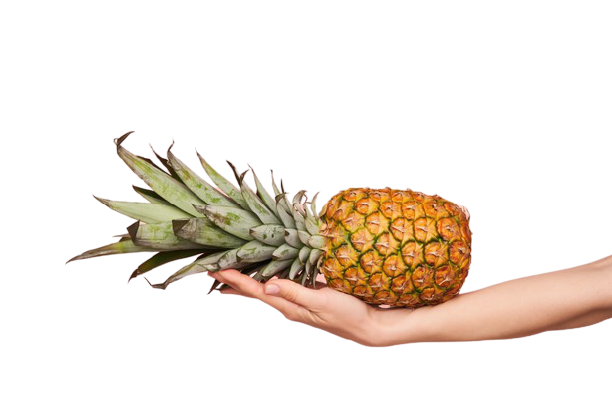

Eat butter Not less
Welcome to My calories, a food database that will help you discover the caloric content and other facts about common foods.
When you use the calorie database to understand how your body gets energy out of your favorite meals and snacks,
use the food information search below to find the calorie chart and nutritional information of your latest meal or its ingredients.
search for food information
